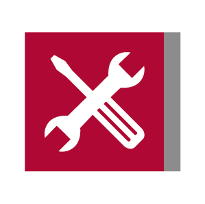

Rauch- und Wärmeabzugsanlagen
Rauch- und Wärmeabzugsanlagen öffnen im Brandfall definierte Entrauchungsflächen, damit Rauch und Wärme kontrolliert aus dem Gebäude abgeführt werden. SIQUA plant und betreut die Anlage passend zum Gebäudekonzept.
Geschäftsbereich 01
Rauch- und Wärmeabzugsanlagen halten Fluchtwege frei und schützen Gebäude im Brandfall. SIQUA plant, berechnet, prüft und wartet die Anlagen und optimiert ihre Steuerung. Lichtkuppeln, Lichtbänder und Absturzsicherungen ergänzen den Bereich.
Leistungen
Jede Leistung als eigener Baustein: von der ersten Berechnung über die Steuerung bis zur wiederkehrenden Prüfung.
Rauch- und Wärmeabzugsanlagen öffnen im Brandfall definierte Entrauchungsflächen, damit Rauch und Wärme kontrolliert aus dem Gebäude abgeführt werden. SIQUA plant und betreut die Anlage passend zum Gebäudekonzept.

Lichtkuppeln und Lichtbänder bringen Tageslicht in das Gebäude und lassen sich als Entrauchungs- oder Lüftungsöffnung nutzen. SIQUA plant die Ausführung und die Einbindung in die RWA-Steuerung.

Regelmäßige Inspektion und Wartung sorgen dafür, dass die Anlage im Ernstfall zuverlässig funktioniert. SIQUA prüft die Komponenten, dokumentiert den Zustand und führt die notwendigen Instandhaltungsarbeiten aus.
Die Planung beginnt mit der Berechnung der erforderlichen Entrauchungsflächen und der Abstimmung auf das Gebäudekonzept. SIQUA erstellt die Grundlagen für Ausführung und Steuerung der Anlage.
Eine abgestimmte Steuerung verbindet die RWA mit Lüftung und weiteren Gebäudefunktionen. SIQUA prüft die vorhandene Steuerung, passt Parameter an und optimiert die Abläufe für den sicheren Betrieb.

Absturzsicherungen schützen Menschen bei Arbeiten auf dem Dach und an Öffnungen. SIQUA ergänzt RWA-Anlagen um geeignete Sicherungslösungen und berücksichtigt dabei die Zugänglichkeit der Komponenten.